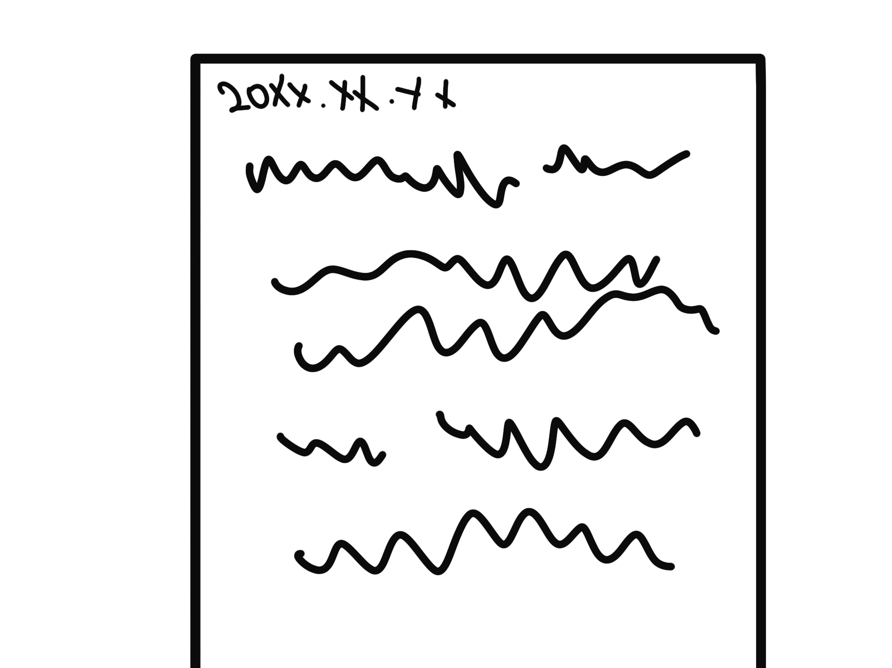

20XX년 X월 X일
무엇인가 잘못되었다. 아니, 어쩌면 예견된 결과일지도 모른다. 나는 그저 퇴근하고 싶었을 뿐이야. 그애도 마찬가지였고.
누군가 이 메모를 읽는다면, 그를 꼭 막아주길 바란다. 더 방치한다면 이 학교가 위험해질것이다.
미안하게 생각하지만, 나가는 문의 비밀번호는 모든것을 해결해야만 찾을 수 있게끔 만들어
두었다. 부탁한다. 꼭 그를 막아줘... 그리고 그에게... 편지를 전해줘. 편지는 책장에 꽂아두었다.
그리고 이 모든 난관을 해쳐나갈 수 있게 테블릿pc도 하나 뒀다. 꼭 그를 막아주길
바래...
[나가기]